Using Voyant Tools and Antconc to analyze word patterns in the inaugural addresses of Thomas Jefferson (1801), John F. Kennedy (1961), and Barack Obama (2009).
Word Clouds
These word clouds reflect the most commonly used words in each of the inaugural speeches. The words give us hints as to the speaker's language and attitude towards the topics discussed in the speeches.
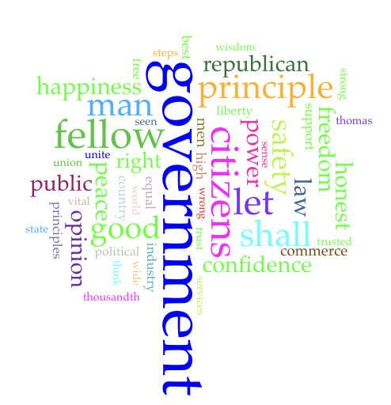
Jefferson Speech
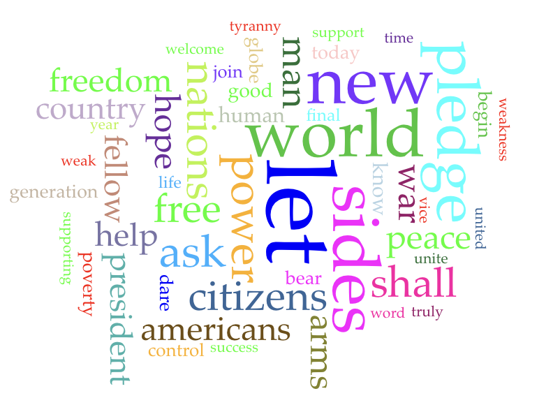
Kennedy Speech
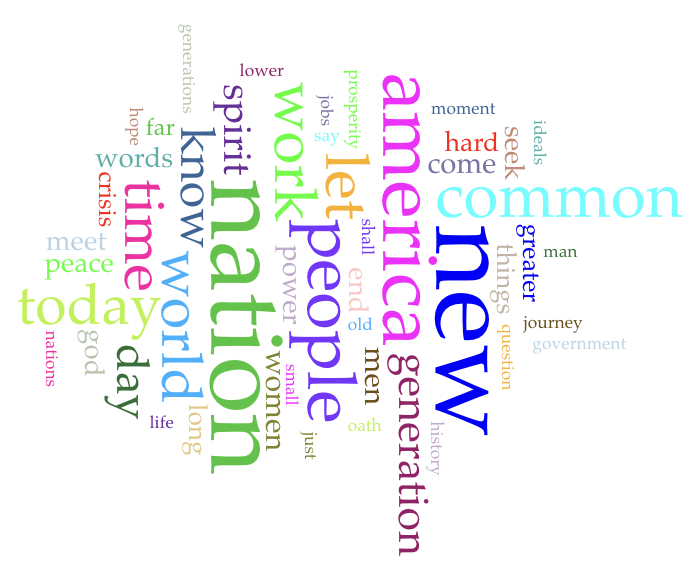
Obama Speech
Speech Graphs
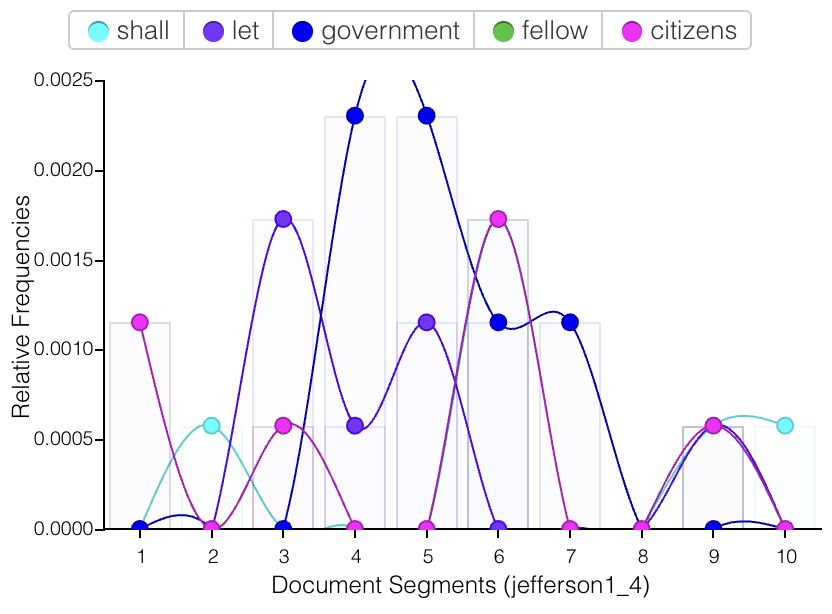
Jefferson Speech
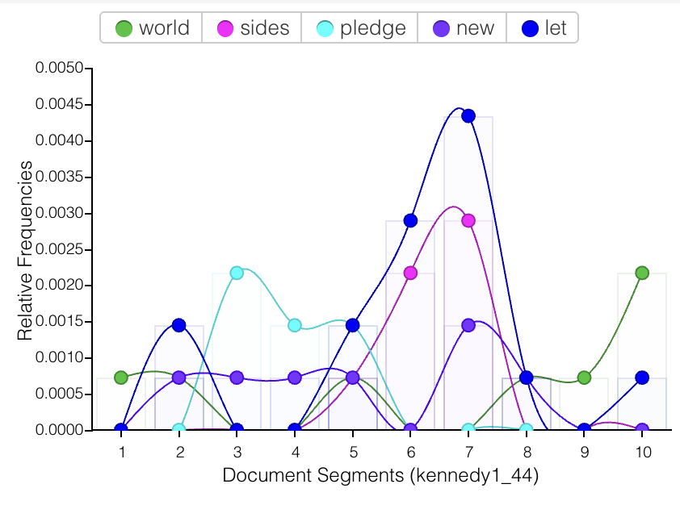
Kennedy Speech
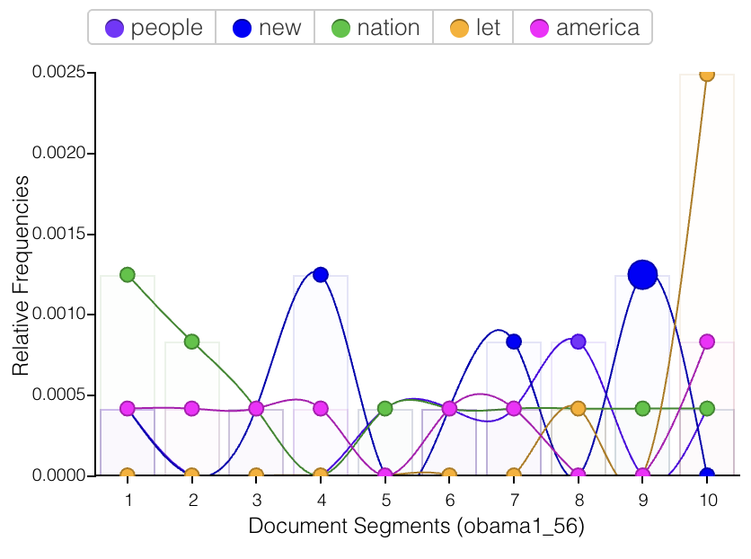
Obama Speech
Keywords in Context
Jefferson
Size 2 N-gram
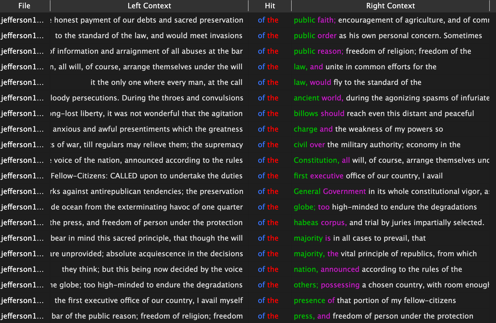
The most recurrent n-gram phrase of size 2 is "of the", with a frequency of 26, the most ever in this document. He talks a lot about the new nation as a whole, unified, with these words (eg. "of the public", "of the globe", "of the Constitution", "of the majority").
Size 3 N-gram
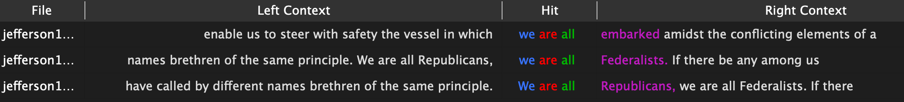
The most recurrent n-gram phrase of size 3 is "we are all", with a frequency of 3. Most n-grams of this size or higher have very low frequencies, meaning he doesn't repeat a lot of phrases with higher word counts. He says "We are all Republicans, we are all Federalists", to reinforce the idea that America was founded on freedom and unity despite party differences.
Size 4 N-gram
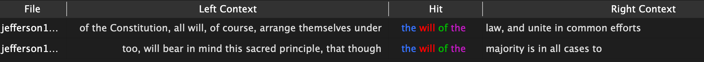
The most recurrent n-gram phrase of size 4 is "the will of the", with a frequency of 2. This is interesting because it highlights the theme of the speech, which is about the principle of majority rule and the beginnings of the new democratic government.
Kennedy
Size 2 N-gram
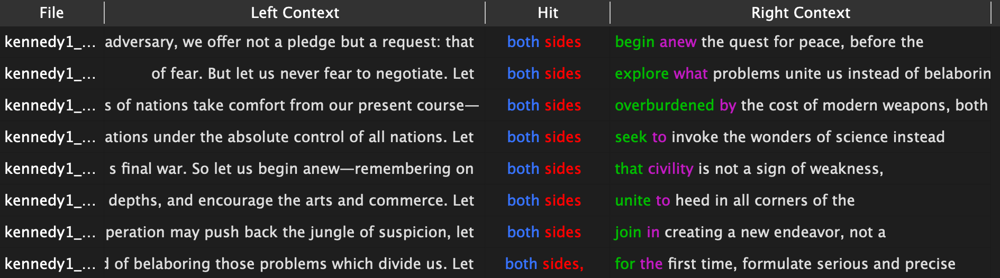
One of the most recurrent n-gram phrase of size 2 is "both sides", with a frequency of 8. He uses this phrase a lot to call for peace and cooperation between the US and the Soviet Union — the opposing sides in the Cold War — amidst the war.
Size 3 N-gram
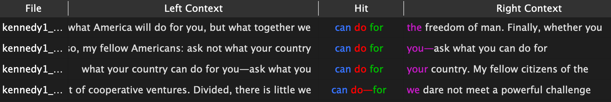
One of the most recurrent n-gram phrase of size 3 is "can do for", with a frequency of 4. He encourages the people not to "ask what your country can do for you", but to "ask what you can do for your country", flipping the narrative to inspire civic duty, sacrifice, and service in national defense and community involvement.
Size 4 N-gram
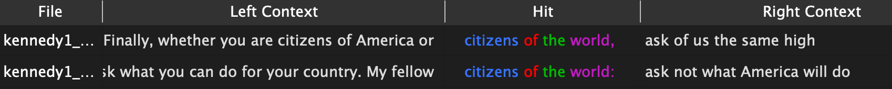
The most recurrent n-gram phrase of size 4 is "citizens of the world", with a frequency of 2. Both times, he uses this phrase towards the end of his speech; at this point, he's speaking to the entire world, whether that's allies, neutral nations, newly independent nations, or even adversaries. He wants the audience to know that his message is not just national, but global.
Obama
Size 2 N-gram
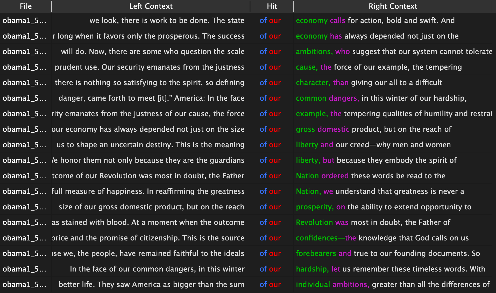
The most recurrent n-gram phrase of size 2 is "of our", with a frequency of 18, the most ever in this document. He creates this pattern of unifying the country's troubles, values, and responsibilities while emphasizing history, community, and national purpose.
Size 3 N-gram
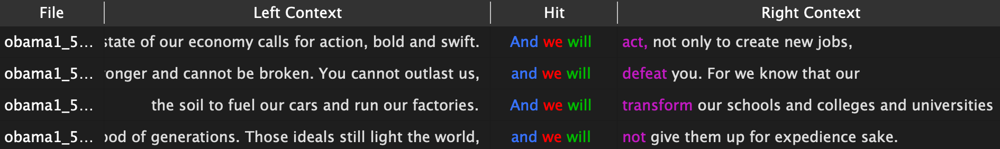
The most recurrent n-gram phrase of size 3 is "and we will", with a frequency of 4. He uses this phrase as promises of action for the country, using "we" instead of "I" to reinforce the speech's theme of collective responsibility. He declares commitments to improving relevant issues such as in jobs, education, and economy.
Size 4 N-gram
The most recurrent n-gram phrase of size 4 is "a new era of", with a frequency of 2. By using this phrase towards the end of his speech, he is highlighting a stark contrast between the many issues at the time (wars, economic crisis, etc.) and his attitude towards fixing it — by claiming a collective, national responsibility and facing whatever the future is going to bring. He wants the nation to know that his election signaled a "new era", where the country is finally unified.
Compare/Contrast
When comparing the inaugural speeches of Jefferson, Kennedy, and Obama, clear patterns about how each president shapes language around their historical moment arise. All three speeches share a common theme of collective/national language, reflecting the shared goal of unifying the country at the start of each presidency. But, n-gram frequencies also highlight differences in the goals of the speeches: Jefferson focuses on democratic princples ("citizens", "government", "republican", etc.), Kennedy focuses on current, global issues ("nations", "power", "world", etc.), and Obama focuses on community actions and the future of the nation ("people", "work", "today", etc.). This is consistent with the historical contexts of each president: Jefferson's was after a fierce election in which there were extreme party divisions, Kennedy's was during the Cold War, and Obama's was during wars in the Middle East and the Great Recession. The KWIC lines help reveal how each president positions these recurring words in context: some appear consistently to appeal to the idea of unity, others used in descriptions of national challenges, and others in calls for responsibility. Overall, the comparison shows that while the three speeches share a common structure built on unity and national purpose, their word patterns differ in emphasis and most frequent ideas, reflecting the political priorities and concerns of each era.